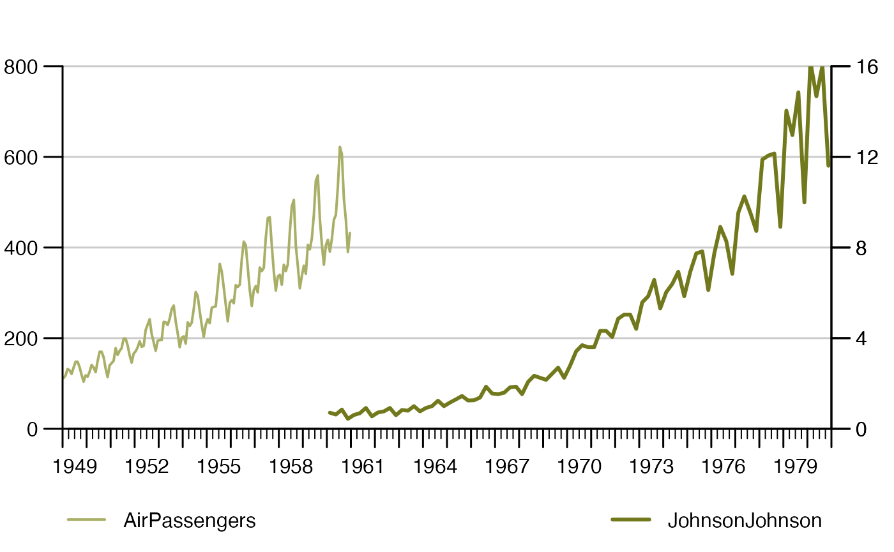

This guide assumes you have installed the {timeseriesdb} R package and a local PostgreSQL client library successfully. We also assume that you have a PostgreSQL database running somewhere that you can connect to. (For the remainder of this guide we assume PostgreSQL runs on a local docker container accessible via port 1111.)
In {timeseriesdb}, functions to interact with the database use the
db_ prefix. Basic read and store functions are an exception
to this rule as they should be easy to find front and center. As opposed
to that more complex, less common operations rather ask for organization
in a group functions.
No matter whether you want to read or write, you’ll need a database
connection. {timeseriesdb} offers a simple wrapper function around
{DBI}’s more universal dbConnect:
con <- db_connection_create(
dbname = "postgres",
user = "dev_admin",
host = "localhost",
passwd = "dev_admin",
port = 1111
)The resulting PostgreSQL connection object can be passed on to all of {timeseriesdb}’s database interaction functions.
Let’s take two time series from the {datasets} R package that ships
with R (monthly AirPassengers, JohnsonJohnson quarterly earnings per
share) and put them into a named list. The {timeseriesdb} R package uses
lists of time series or long format time series data.tables
to store one or more time series into PostgreSQL.
tsl <- list(
AirPassengers = AirPassengers,
JohnsonJohnson = JohnsonJohnson
)
db_ts_store(con, tsl, "main",
schema = "tsdb_test"
)Now let’s read the series we have just stored to the database into R
again. Note that db_ts_read returns a list of time series
whose elements’ names are the time series keys (unique identifiers) from
the database. In this case example we use our {tstools} package
to visualize both series.
out <- db_ts_read(con, c(
"JohnsonJohnson",
"AirPassengers"
),
schema = "tsdb_test"
)
library(tstools)
tsplot(
AirPassengers = out$AirPassengers,
tsr = list(JohnsonJohnson = out$JohnsonJohnson)
)
In {timeseriesdb}, the most basic way to store data descriptions is
to assign non-translated (unlocalized) meta information at the time
series level. In order to store meta information to the database, lets
first create a tsmeta object in R.
library(timeseriesdb)
tsm <- create_tsmeta(
JohnsonJohnson = list(
title = "Historical Quarterly earnings (dollars) per Johnson & Johnson share",
source = "Shumway, R. H. and Stoffer, D. S. (2000) Time Series Analysis and its Applications. Second Edition. Springer. Example 1.1"
),
AirPassengers = list(
title = "The classic Box & Jenkins airline data. Monthly totals of international airline passengers",
source = "Box, G. E. P., Jenkins, G. M. and Reinsel, G. C. (1976) Time Series Analysis, Forecasting and Control. Third Edition. Holden-Day. Series G."
)
)
tsm
#> Object of class tsmeta
#> $JohnsonJohnson
#> Object of class meta
#> title : Historical Quarterly earnings (dollars) per Johnson & Johnson share
#> source: Shumway, R. H. and Stoffer, D. S. (2000) Time Series Analysis and its Applications. Second Edition. Springer. Example 1.1
#>
#> $AirPassengers
#> Object of class meta
#> title : The classic Box & Jenkins airline data. Monthly totals of international airline passengers
#> source: Box, G. E. P., Jenkins, G. M. and Reinsel, G. C. (1976) Time Series Analysis, Forecasting and Control. Third Edition. Holden-Day. Series G.Now, pass on the tsmeta object to the database.
db_store_ts_metadata(con,
tsm,
valid_from = Sys.Date(),
schema = "tsdb_test"
)Note that the default locale for the write operation is NULL. This means there is only one language and data descriptions are not translated to different languages. If you want to learn how to add localized meta information or meta information at the vintage or dataset level, please read the advanced usage vignette.
Reading the data from the database is just as easy:
tsm <- db_read_ts_metadata(con, c(
"JohnsonJohnson",
"AirPassengers"
),
schema = "tsdb_test"
){timeseriesdb} offers a plethora of features beyond mere storage of time series and their descriptions: {timeseriesdb} can keep track of different versions of the same time series (vintages), group time series into datasets, store user specific collection of series, manage access on time series level and manage release dates.
The learn more about these advanced features read the advanced usage vignette.